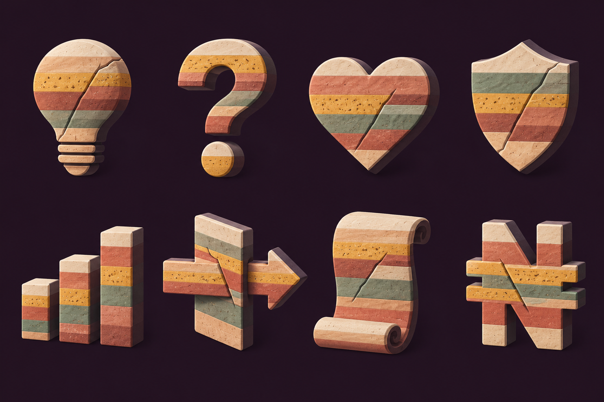
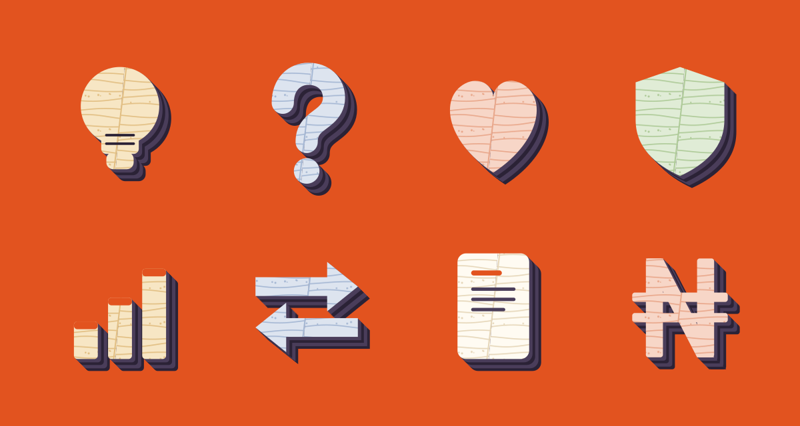
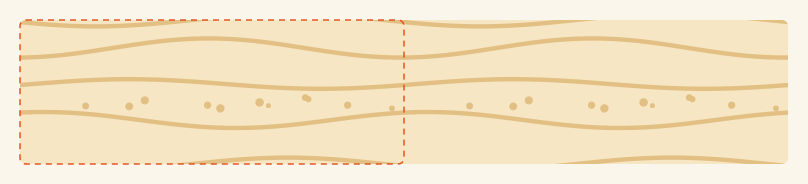
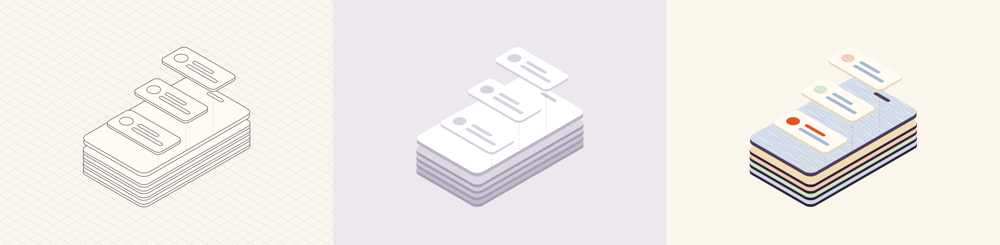

The v1 proof rendered a geology mood board. This version is a construction system: one pattern tile, one depth rule, one anchor hue and three modes. Every asset is generated from them as vector (build.mjs), so any designer can add an asset nobody has drawn yet.
TenetSmall, regular contributions become a durable foundation.
Source worldSedimentary stratigraphy (USGS)
Source behaviourDeposit → compact → fault → keep the record
Visual grammarBedding lines, layered sidewalls, a single fault, the newest layer in ferric
Communicative useProgress adds layers. Setbacks shift layers but never erase them.
Where v1 went wrong
The meaning chain in v1 was sound. The execution undid it: the reference's main quality is controlled, scalable precision, and v1 lost it.
v1 failure
Texture instead of pattern
v1 painted thick horizontal colour bands with stone grain over every shape. Guilloché is fine, low-contrast linework inside a clean silhouette, so the shape reads first and the pattern second. v1 reversed that order. Fix: a 96×36 bedding tile, line colour one step darker than the face, 1.1 units wide.
v1 failure
Three modes collapsed into one
The reference uses three different modes: isometric linework (scene), flat pictograms (icons) and extruded objects (covers). v1 rendered all three as the same chunky clay. Fix: true isometric scene, flat icons, oblique-extruded covers. They share tokens, not rendering.
v1 failure
No anchor hue
Cowrywise hangs everything on one electric blue + one ink + pastels. v1 spread five earth tones at equal weight, so nothing signals. Fix: Ferric (iron oxide, the pigment that actually bands red rock) is the only saturated colour. It marks the subject, the field and the newest deposit.
v1 failure
Raster, lit, not reproducible
v1's images came from an image model, with drop shadows, rendered lighting, a crack in a different place on every object, and no files a team could edit. That gives you a style sample, not a system. Fix: every asset is generated SVG from shared functions. Flat colour, no lighting, and the fault sits at the same angle and throw on every object.
v1 failure
No reduced states
v1 documented "vector reduction at 16–24 px" as future work, but the skill names scalability as a requirement. Fix: three icon tiers are generated from one definition: bedding on the plate, then a plain plate, then the silhouette alone.
v1 failure
Fake motion
v1's GIF was a storyboard image sliced into six crops, so the frames don't register and the block drifts between them. Fix: real CSS animation in the SVGs: layers deposit, settle and fault; target rings deposit; the date ticks. All three honour reduced motion.

v1: the stripes dominate the silhouette, and the lighting and crack placement change from object to object.

v2: the silhouette comes first, then fine bedding with one consistent fault, then a layered sidewall.
Tokens
The palette has the same role structure as the reference (signal, depth, quiet faces), but every hue is chosen from the source world.
Ferric #E2531F signal · field · newest layer
Basalt #2B2236 depth · structure
Basalt soft #4A3D5A sidewall bands
Sand #F7E6C4 / line #E2BF83
Clay #F7D6C7 / line #E9A88C
Lichen #E0ECD6 / line #AFCB99
Slate #DDE4EF / line #A6B8D4
Bone #FFFBF2 / line #E6D7BA

Bedding tile
Grid
96 × 36, seamless both axes (dashed = one tile)
Bedding planes
4 sine lines, 1 period per tile; amplitudes 1.6 / 2.4 / 1.2 / 2.0; distinct phases so beds never look like corrugation
Grains
11 dots, r 0.6–1.1, only in the third bed (sandstone)
Contrast
Line = face + one tone step. Never ink on pastel.
Lamina
Straight hatching every 4–5 units for quiet surfaces (core plates)
Invariants
These five rules never change. If an asset obeys all five, it belongs to the family, even in one colour.
1 · Silhouette first
Every subject must be recognisable as a solid shape in one colour. Bedding is only ever clipped inside a face.
2 · Edges show history
Every extrusion is a stack of offset layers in alternating basalt tones. The sidewall is a cross-section, not a shadow.
3 · One fault, fixed
Editorial faces carry a single fault from (112,0) to (88,200) with a throw of 7. It displaces the beds and never erases them.
4 · Newest layer is ferric
Whatever was added most recently (top bar, active card, last deposit) takes the anchor hue.
5 · Lower-right depth
Oblique objects extrude at 45° to the lower-right. Scenes use 30° isometric. There is no lighting and no drop shadow.
Native motion
There are four verbs: deposit, settle, fault, hold. Each motion moves one thing at a time, and reduced motion shows the final held frame.
1 · Technical scene
True isometric, cycling wireframe → volume → material like the reference. The account surface rests on four strata plates: your balance is built from your deposits.


2 · Product pictograms
Flat. Ferric carries the subject, and bedding appears only on the pale back plate. One definition yields three scale tiers.

3 · Editorial objects
Rational (bulb, chart, document, naira), emotional (heart, shield) and abstract (question, transfer) subjects on a ferric field.
4 · Motion: deposit, settle, fault, hold

Six layers fall and settle in sequence, and the final layer is always ferric. Then a fault shifts the right block 12 units. The record stays intact, which is the brand's argument about setbacks.
The timing is 8 s per loop: 0.55 s between deposits, then the fault at 4.1 s and a hold. With reduced motion, the final faulted stack is shown.
Remaining limits
To keep this an honest proof:
Bedrock is still a fictional proof brand. The palette has not been contrast-tested against product UI, and the micro tier hasn't been pixel-hinted for 16 px. The next step is an unseen-asset test: give a designer only this page and ask for a "Withdraw" icon and a "Pension" cover.